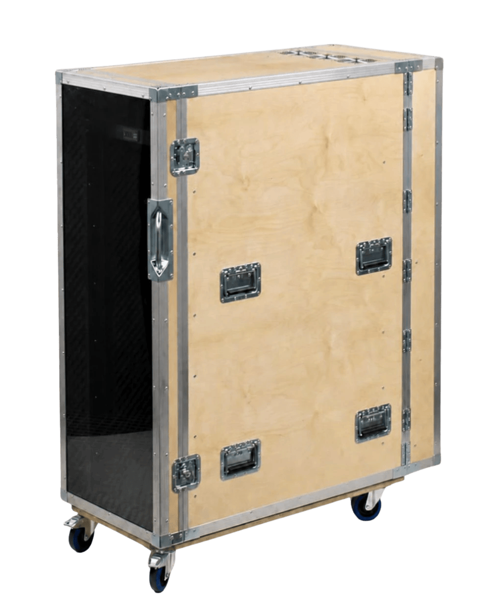

Dieses Rack wurde entwickelt, um aktiv belüftete Technik in Seminarräumen zu nutzen – ohne jegliches Geräusch. Verschachtelte Lüftungskanäle und Akustikschaum an allen glatten Flächen wirken so gut, dass die aktive Belüftung trotz durchsichtiger Tür nicht zu hören ist.
Überall dort, wo Lüftergeräusche ein Problem sind und Geräte gekühlt werden müssen. Die aktive Belüftung läuft völlig geräuschlos, dein Equipment bleibt gekühlt. Ob Tonstudio, Büro, Mobile Aufnahme, Vortragsraum, Bühne oder Live-Betrieb.
Alle Geräteanzeigen im Blick – durchsichtig, kein Blindflug
Verschachtelte Kanäle + Akustikschaum – Lüfter, die man nicht hört
4× temperaturgesteuerte 120mm Lüfter – vollautomatische Kühlung
Alle inneren Flächen mit Akustikschaum belegt – totale Geräuschabsorption
Schall- und staubgeschützte Kabelführung – sauber & leise
Technik, die im Raum stehen soll
Tür öffnet sich leicht, ganz ohne Fummelei
Seit 30 Jahren – made in Hamburg.
Das Silent Rack fertigen wir in beliebigen Rackhöhen und Racktiefen. Auch sonst ist alles konfigurierbar: Plattenmaterial (Gewicht und Haltbarkeit, auch Ultraleicht-Optionen), Design (Farben, Logos, Beschläge), Schwing-Rack mit schwingender Aufhängung der Rackschienen für optimalen Geräteschutz – und alles andere, was du dir vorstellst.
So leise, dass es in einem Raum mit Menschen, die sich sehr leise unterhalten, nicht zu hören ist. Die Lüfterrichtung geht nach unten gegen den Boden, nicht nach oben – das minimiert Schallausbreitung nach außen zusätzlich.
2 bis 8 Wochen, je nach Auslastung. In Notfällen oft schneller.
Individuell konfiguriert, Preis hängt von Anforderungen ab. Schnelles unverbindliches Angebot.
Dieses genaue Case gibt es nicht vor Ort (custom gebaut), Besuch für ähnliche Lösungen/Materialien möglich.
HE (Höheneinheit), U (Unit) und RU (Rack Unit) meinen dasselbe Maß: 1 HE = 1,75 Zoll = 44,45 mm. 26 HE ist die Bauhöhe der Rackschienen – nicht die Außenhöhe des Cases.
| Bauart | Ultra Protect Flightcase (Double-Door-Case) |
|---|---|
| Plattenmaterial | Birken-Multiplex 9mm |
| Oberfläche | Natur Birke geölt |
| Verschluss | Butterfly mit Öse – vorhängeschlosstauglich |
| Griffe | 8x Einbau-Klappgriff, 2x Kantengriff |
| Stromversorgung | Schuko-Steckdosenleiste 8-fach (ungeschaltet), Kabelzugentlastung |
| Außenmaße | 580 x 1327 x 1010 mm |
| Gewicht | 59 kg |
ARD ZDF Medienakademie nutzt das Silent Rack in ihren Seminarräumen.
Ja, klar. Auf Wunsch liefern wir dein Case als White-Label-Case aus – ganz ohne unser Schild, oder wir montieren stattdessen deins. Verpackung und Versand laufen dabei komplett neutral, und wir nutzen gern deine eigenen Lieferpapiere. So kannst du sogar direkt an deine Kunden liefern lassen, ohne dass sichtbar wird, wer das Case tatsächlich gebaut hat.
Ob Standard oder kniffelig – wir finden gemeinsam eine Lösung, schneller und besser als du denkst. Melde dich unverbindlich, per E-Mail oder Anruf.